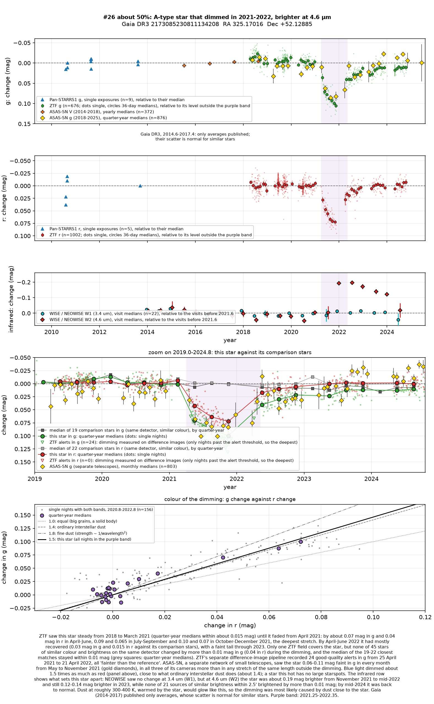
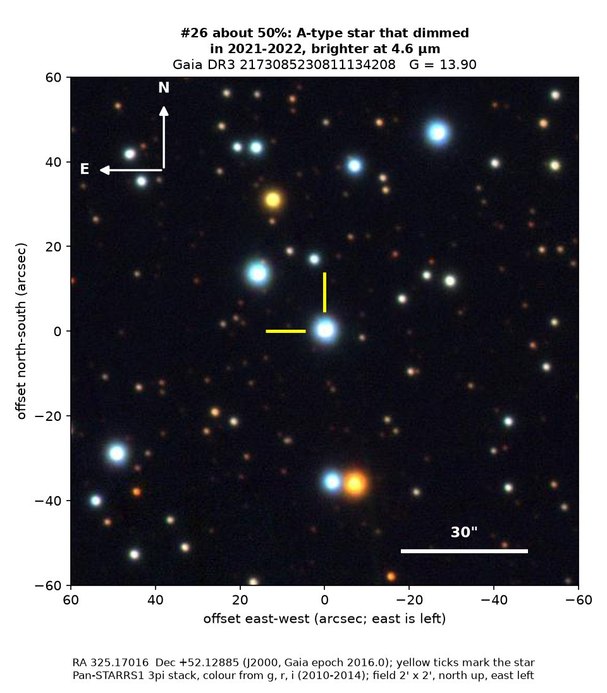
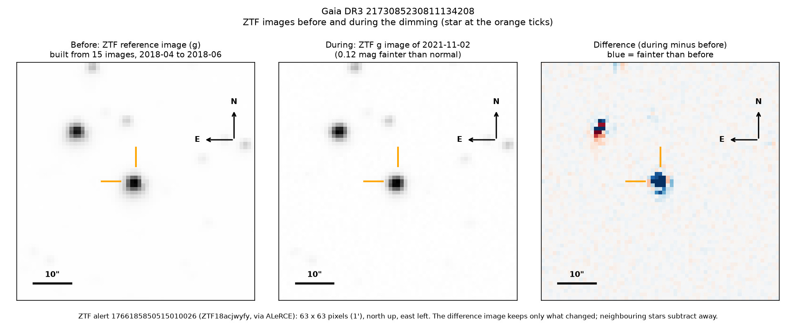
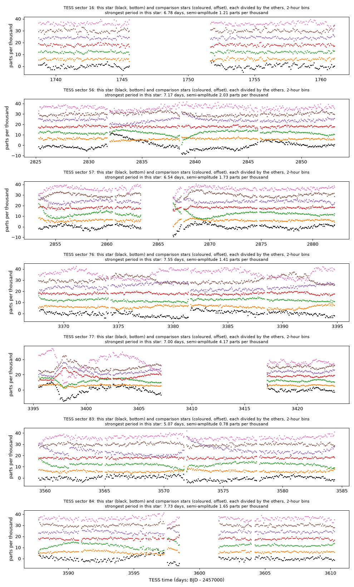

Professor of Mathematics
Paata Ivanisvili
Department of Mathematics, University of California, Irvine

Candidate 26: a hot star that dimmed for a year and brightened in the infrared
Why this estimate. The dimming is certainly real: ZTF (the Zwicky Transient Facility, a survey telescope at Palomar Observatory in California) and ASAS-SN (a worldwide network of small telescopes) both recorded it, and a star this hot has no large starspots. NEOWISE, NASA’s infrared space telescope, also saw it grow brighter at 4.6 microns, as dust warmed by the star would make it. The estimate is not higher because there is no spectrum, ZTF’s light curves come from a single field, and an unrelated infrared source very close to the star cannot be fully excluded.
How to read the pictures. The finder chart shows a patch of sky two arcminutes across, about a fifteenth of the Moon’s width, with north up and east to the left. The star sits between the two yellow ticks, and the white bar is 30 arcseconds long. On a light curve the vertical axis is magnitude, a brightness scale on which larger numbers mean fainter stars, and it is drawn so that down means fainter. Purple shading marks the dimming. Each survey uses slightly different filters, so each is compared with its own normal level. The ZTF pictures show ZTF’s reference image of the star, an image taken during the dimming, and the difference between the two, in which only what changed remains: blue means fainter and red brighter. On the TESS light curves the star is black and the comparison stars are coloured.

What changed. This hot A-type star in Cygnus, about 2,400 parsecs (8,000 light-years) away, is roughly 100 times as luminous as the Sun and seen through a lot of interstellar dust. After at least six steady years it faded from April 2021, most deeply from October to December 2021, when it had lost about 9 per cent of its green light and 6 per cent of its red. By April to June 2022 it had nearly recovered.
During the dimming, none of 45 comparison stars on the same ZTF detector changed by more than 0.01 magnitudes in green light. ZTF’s alert system, which compares each new image with a reference image, recorded 24 good-quality alerts, all fainter than the reference, and ASAS-SN’s eight faintest well-observed months all fall inside the dimming. NEOWISE found the star 0.19 magnitudes brighter at 4.6 microns by November 2021 and back to normal only by June 2024, with no change at 3.4 microns.
Why it might matter. Dust close to the star is the likeliest cause. Green light dimmed about 1.5 times as much as red, like ordinary interstellar dust (1.4); an opaque body would dim all colours equally. Dust a few astronomical units out (one is the Earth–Sun distance), warmed by the star to 300 to 400 kelvin, brightens it far more at 4.6 microns than at 3.4, as seen. The glow means that the dust absorbed only about 0.3 to 1.5 per cent of the star’s light, yet along the line of sight it blocked about 6 to 9 per cent, so it must be clumped or flattened.
A Be star, a hot star with a disc of gas, would also have brightened at 3.4 microns, and the spectra of Gaia, the European Space Agency’s star-mapping satellite, show no emission; a young star with a dusty disc would have shown hot dust before the event. ASAS-SN and NEOWISE make an instrumental cause unlikely. A similar dimming and glow around the Sun-like star ASASSN-21qj was attributed to debris from colliding planets (Kenworthy et al. 2023). A spectrum would confirm the star’s type and show whether it has the emission lines of a Be star.
No record of the dimming could be found. The star is not in SIMBAD, VSX (the variable-star index), Gaia’s variable-star lists or any other catalogue consulted, nor among the dimming stars of Tzanidakis et al. (2025), the nearest of which is 1.8 degrees away. No transient report, Gaia alert or paper names it, and ZTF’s alert system holds only machine-generated classifications, none of them confident.
- Star
- Gaia DR3 2173085230811134208, a hot A-type star
- Location
- RA 325.17016°, Dec +52.12885° (J2000), in Cygnus, 0.45 degrees south of the Milky Way’s mid-plane
- Distance
- about 2,400 parsecs (8,000 light-years)
- Brightness
- Gaia G = 13.90, far too faint for the eye
- Probability
- This candidate is unconfirmed. The percentage under the title is an estimate of the chance that it is a real, previously unrecorded case of the kind described. The estimate has not been checked by outside experts. See the introduction to all fifty-eight candidates.
- Caveat
- There is no spectrum, and the star’s type and reddening rest on Gaia’s low-resolution spectra alone. Two other stars, candidate 27 and candidate 43, dimmed over almost the same months, but they are far nearer, at 870 and 1,000 parsecs, so no single cloud could have dimmed all three; the coincidence is most likely chance. Several other stars that dimmed in the same survey data, among them candidate 57 and one already published by Tzanidakis et al. (2025), were also faint in late 2021 and early 2022, but ASAS-SN and NEOWISE, which share no equipment with ZTF, recorded this one too.


